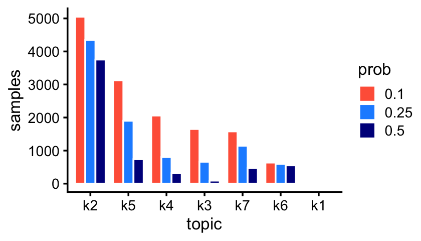
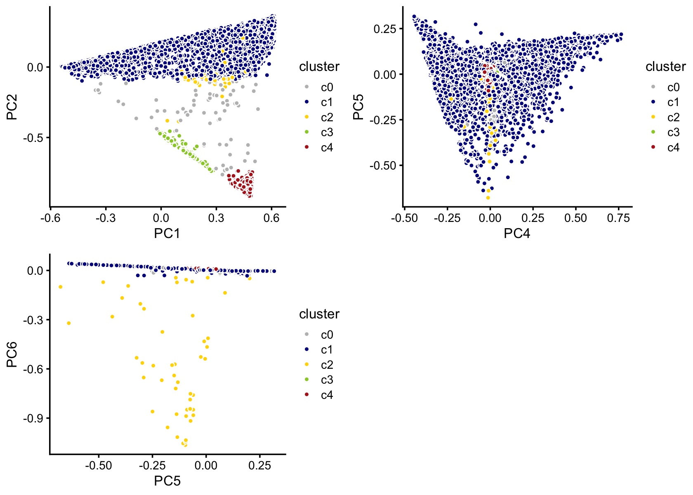
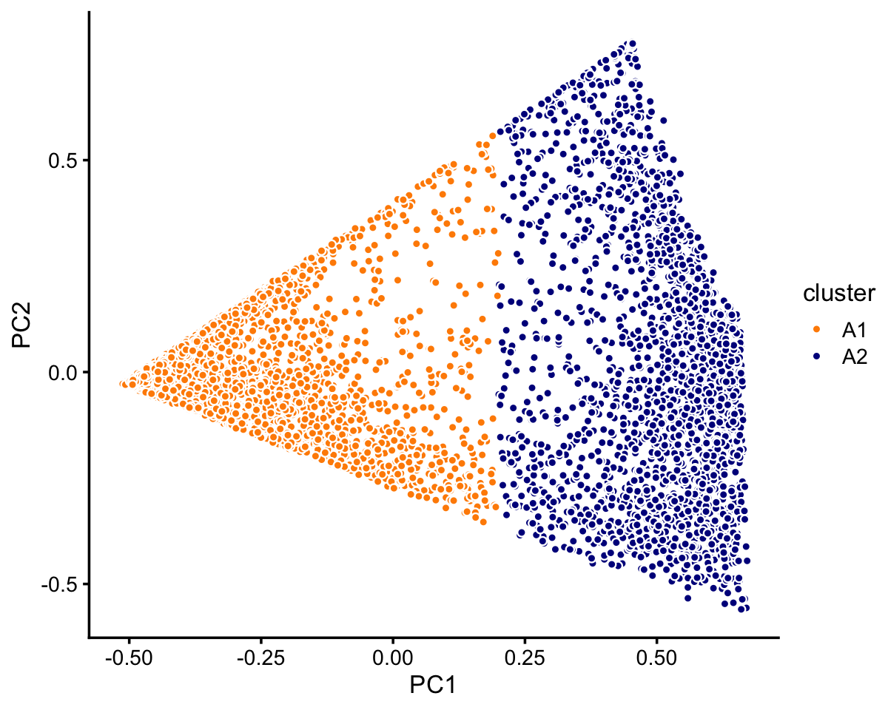
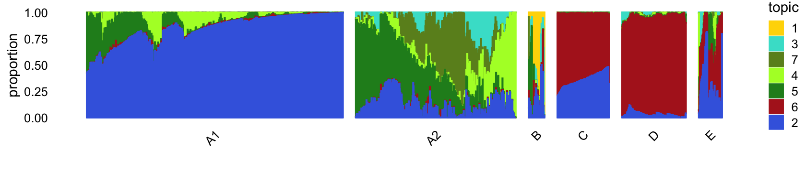

Last updated: 2020-08-25
Checks: 7 0
Knit directory: single-cell-topics/analysis/
This reproducible R Markdown analysis was created with workflowr (version 1.6.2.9000). The Checks tab describes the reproducibility checks that were applied when the results were created. The Past versions tab lists the development history.
Great! Since the R Markdown file has been committed to the Git repository, you know the exact version of the code that produced these results.
Great job! The global environment was empty. Objects defined in the global environment can affect the analysis in your R Markdown file in unknown ways. For reproduciblity it’s best to always run the code in an empty environment.
The command set.seed(1) was run prior to running the code in the R Markdown file. Setting a seed ensures that any results that rely on randomness, e.g. subsampling or permutations, are reproducible.
Great job! Recording the operating system, R version, and package versions is critical for reproducibility.
Nice! There were no cached chunks for this analysis, so you can be confident that you successfully produced the results during this run.
Great job! Using relative paths to the files within your workflowr project makes it easier to run your code on other machines.
Great! You are using Git for version control. Tracking code development and connecting the code version to the results is critical for reproducibility.
The results in this page were generated with repository version e11855b. See the Past versions tab to see a history of the changes made to the R Markdown and HTML files.
Note that you need to be careful to ensure that all relevant files for the analysis have been committed to Git prior to generating the results (you can use wflow_publish or wflow_git_commit). workflowr only checks the R Markdown file, but you know if there are other scripts or data files that it depends on. Below is the status of the Git repository when the results were generated:
Ignored files:
Ignored: data/droplet.RData
Ignored: data/pbmc_68k.RData
Ignored: data/pbmc_purified.RData
Ignored: data/pulseseq.RData
Ignored: output/droplet/fits-droplet.RData
Ignored: output/droplet/rds/
Ignored: output/pbmc-68k/fits-pbmc-68k.RData
Ignored: output/pbmc-68k/rds/
Ignored: output/pbmc-purified/fits-pbmc-purified.RData
Ignored: output/pbmc-purified/rds/
Ignored: output/pulseseq/fits-pulseseq.RData
Ignored: output/pulseseq/rds/
Note that any generated files, e.g. HTML, png, CSS, etc., are not included in this status report because it is ok for generated content to have uncommitted changes.
These are the previous versions of the repository in which changes were made to the R Markdown (analysis/plots_tracheal_epithelium.Rmd) and HTML (docs/plots_tracheal_epithelium.html) files. If you’ve configured a remote Git repository (see ?wflow_git_remote), click on the hyperlinks in the table below to view the files as they were in that past version.
| File | Version | Author | Date | Message |
|---|---|---|---|---|
| Rmd | e11855b | Peter Carbonetto | 2020-08-25 | Working on revised analysis of droplet and pulse-seq data sets. |
| html | e11855b | Peter Carbonetto | 2020-08-25 | Working on revised analysis of droplet and pulse-seq data sets. |
| Rmd | bf23ca0 | Peter Carbonetto | 2020-08-20 | Added manual labeling of purified PBMC data to plots_pbmc analysis. |
| Rmd | 077d3d5 | Peter Carbonetto | 2020-08-20 | Added k=9 and k=11 pulseseq fits to plots_tracheal_epithelium analysis. |
| html | 0ce9604 | Peter Carbonetto | 2020-08-20 | Re-built plots_tracheal_epithelium with fastTopics 0.3-162. |
| Rmd | 961570e | Peter Carbonetto | 2020-08-20 | wflow_publish(“plots_tracheal_epithelium.Rmd”) |
| html | b17bfa4 | Peter Carbonetto | 2020-08-19 | Added pulseseq PCA plots to plots_tracheal_epithelium analysis. |
| Rmd | 76dc0c6 | Peter Carbonetto | 2020-08-19 | wflow_publish(“plots_tracheal_epithelium.Rmd”) |
| Rmd | c70612f | Peter Carbonetto | 2020-08-19 | Revised structure plot settings for abundant droplet samples in plots_tracheal_epithelium. |
| html | adda33f | Peter Carbonetto | 2020-08-19 | Fixed another structure plot in plots_tracheal_epithelium analysis. |
| Rmd | 29a9258 | Peter Carbonetto | 2020-08-19 | wflow_publish(“plots_tracheal_epithelium.Rmd”) |
| html | 0a16b60 | Peter Carbonetto | 2020-08-19 | Fixed structure plot in plots_tracheal_epithelium analysis. |
| Rmd | 3a7bd74 | Peter Carbonetto | 2020-08-19 | wflow_publish(“plots_tracheal_epithelium.Rmd”) |
| html | f4bdf19 | Peter Carbonetto | 2020-08-19 | Added explanatory text and improved PC-based manual clustering of |
| Rmd | c7b77ee | Peter Carbonetto | 2020-08-19 | wflow_publish(“plots_tracheal_epithelium.Rmd”) |
| Rmd | 70a4a60 | Peter Carbonetto | 2020-08-19 | Added note to plots_tracheal_epithelium.Rmd. |
| html | fb21b3b | Peter Carbonetto | 2020-08-19 | Added very initial Structure plots to plots_tracheal_epithelium analysis. |
| Rmd | d35cb03 | Peter Carbonetto | 2020-08-19 | wflow_publish(“plots_tracheal_epithelium.Rmd”) |
| html | 368a74a | Peter Carbonetto | 2020-08-19 | Added some text to plots_tracheal_epithelium analysis. |
| Rmd | 223406b | Peter Carbonetto | 2020-08-19 | wflow_publish(“plots_tracheal_epithelium.Rmd”) |
| html | aca46cc | Peter Carbonetto | 2020-08-19 | Added manual clustering of droplet samples based on PCs. |
| Rmd | 38f811b | Peter Carbonetto | 2020-08-19 | wflow_publish(“plots_tracheal_epithelium.Rmd”) |
| Rmd | 343747e | Peter Carbonetto | 2020-08-19 | Small edit to figure dimensions. |
| html | 5a35bbd | Peter Carbonetto | 2020-08-19 | Added labeled PCA plot; adjusted plot dimensions in |
| Rmd | fb91075 | Peter Carbonetto | 2020-08-19 | wflow_publish(“plots_tracheal_epithelium.Rmd”) |
| html | 8b9b528 | Peter Carbonetto | 2020-08-19 | Added more PCA plots to plots_tracheal_epithelium analysis. |
| Rmd | ee7cbf1 | Peter Carbonetto | 2020-08-19 | wflow_publish(“plots_tracheal_epithelium.Rmd”) |
| html | c517ea2 | Peter Carbonetto | 2020-08-18 | Small fix to one of the PCA plots in plots_tracheal_epithelium. |
| Rmd | 8f5c210 | Peter Carbonetto | 2020-08-18 | wflow_publish(“plots_tracheal_epithelium.Rmd”) |
| html | 01afbd2 | Peter Carbonetto | 2020-08-18 | Added some PC plots to the plots_tracheal_epithelium analysis. |
| Rmd | f1c7d02 | Peter Carbonetto | 2020-08-18 | wflow_publish(“plots_tracheal_epithelium.Rmd”) |
| html | 0a04fc1 | Peter Carbonetto | 2020-08-18 | Added abundance plots to plots_tracheal_epithelium analysis. |
| Rmd | f914f7e | Peter Carbonetto | 2020-08-18 | wflow_publish(“plots_tracheal_epithelium.Rmd”) |
| Rmd | 61917ad | Peter Carbonetto | 2020-08-18 | Working on new analysis, plots_tracheal_epithelium.Rmd. |
TO DO: Add introductory text here.
Load the packages used in the analysis below, as well as additional functions that we will use to generate some of the plots.
library(dplyr)
library(fastTopics)
library(ggplot2)
library(cowplot)
source("../code/plots.R")We begin with the droplet data. Note that the count data are no longer needed at this stage.
load("../data/droplet.RData")
samples_droplet <- samples
rm(samples,counts)Load the \(k = 7\) Poisson NMF model fit.
fit_droplet <- readRDS("../output/droplet/rds/fit-droplet-scd-ex-k=7.rds")$fitThe Montoro et al (2018) article mentions that some epithelial cell types are abundant whereas others are rare. The topics inferred from the droplet data reflect this:
p1 <- create_abundance_plot(fit_droplet)
print(p1)
| Version | Author | Date |
|---|---|---|
| 0a04fc1 | Peter Carbonetto | 2020-08-18 |
The first topic—which is not actually visible in this bar chart—is indeed very rare; only 43 out of 7,193 samples have a greater than 10% contribution from this topic.
sum(poisson2multinom(fit_droplet)$L[,1] > 0.1)
# [1] 43In this next part of the analysis, we perform PCA on the estimated topic proportions to explore structure in the data as inferred by the topic model. Typically, a nonlinear embedding method such as t-SNE or UMAP is used to visualize the structure. The disadvantage of such methods is that it can often be difficult to get the (many) tuning parameters right, they can be slow when applied to large data sets, and the embeddings are not unique; by contrast, PCA has no tuning parameters, and the principal components (PCs) are unique.
fit <- poisson2multinom(fit_droplet)
pca <- prcomp(fit$L)$xIn the projection onto four of the PCs—PCs 1, 2, 5 and 6—we can delineate 4 clusters. A fifth subset (“E”) is used as a “background” cluster. (Note that PCs 3 and 4 do not reveal any additional substrcture, so are not shown.)
n <- nrow(pca)
x <- rep("E",n)
pc1 <- pca[,"PC1"]
pc2 <- pca[,"PC2"]
pc6 <- pca[,"PC6"]
x[pc2 > -0.1] <- "A"
x[pc6 < -0.04] <- "B"
x[(pc1 - 0)^2 + (pc2 + 0.75)^2 < 0.09] <- "C"
x[(pc1 - 0.5)^2 + (pc2 + 0.9)^2 < 0.04] <- "D"
samples_droplet$cluster <- x
p1 <- pca_plot_with_labels(fit_droplet,c("PC1","PC2"),x) +
labs(fill = "cluster")
p2 <- pca_plot_with_labels(fit_droplet,c("PC5","PC6"),x) +
labs(fill = "cluster")
plot_grid(p1,p2)
The vast majority of the cells are in cluster A:
table(x)
# x
# A B C D E
# 6533 50 162 375 73Cluster A further subdivides into two not-quite-so-distinct subclusters, otherwise there does not appear to be any other interesting substructure to delineate:
rows <- which(samples_droplet$cluster == "A")
fit <- select(poisson2multinom(fit_droplet),loadings = rows)
pca <- prcomp(fit$L)$x
n <- nrow(pca)
x <- rep("A1",n)
pc1 <- pca[,1]
x[pc1 > 0.2] <- "A2"
samples_droplet[rows,"cluster"] <- x
p3 <- pca_plot_with_labels(fit,c("PC1","PC2"),x) +
labs(fill = "cluster")
print(p3)
In summary, we have subdivided the data into 6 subsets:
samples_droplet$cluster <- factor(samples_droplet$cluster)
table(samples_droplet$cluster)
#
# A1 A2 B C D E
# 3968 2565 50 162 375 73The structure plot summarizes the topic proportions in each of these 6 subsets:
set.seed(2)
droplet_topic_colors <- c("gold","royalblue","turquoise","greenyellow",
"forestgreen","firebrick","olivedrab")
droplet_topics <- c(1,3,7,4,5,6,2)
rows <- sort(c(sample(which(samples_droplet$cluster == "A1"),800),
sample(which(samples_droplet$cluster == "A2"),500),
which(samples_droplet$cluster == "B"),
which(samples_droplet$cluster == "C"),
sample(which(samples_droplet$cluster == "D"),200),
which(samples_droplet$cluster == "E"),200))
p4 <- structure_plot(select(poisson2multinom(fit_droplet),loadings = rows),
grouping = samples_droplet[rows,"cluster"],
topics = droplet_topics,
colors = droplet_topic_colors[droplet_topics],
perplexity = c(100,70,12,50,50,20),
n = Inf,gap = 40,num_threads = 4,verbose = FALSE)
print(p4)
The bulk of the samples lie on a continuous gradient between topics 2 and 5. There is a smaller cluster at the bottom of this plot, with high contributions from topic 6.
Along these PCs, we see that topics 3, 4, 5 and 7 exist in many combinations, with no apparent discrete populations.
Topic 1 captures a very small discrete population of cells:
In summary, topics 1 and 6 pick up discrete “cell types”, whereas the other topics characterize more continuous variation in gene expression, perhaps cell types along a continuous trajectory of development. There are some other discrete clusters that seem to be composed of distinct combinations of topics that we will neeed to examine more closely.
These next few scatterplots show the same PCs as before, with the samples labeled according to their assignment to these clusters:
droplet_cluster_colors <- c("gray","darkblue","gold","yellowgreen","firebrick")
p9 <- pca_plot_with_labels(fit_droplet,c("PC1","PC2"),samples_droplet$cluster,
droplet_cluster_colors) + labs(fill = "cluster")
p10 <- pca_plot_with_labels(fit_droplet,c("PC4","PC5"),samples_droplet$cluster,
droplet_cluster_colors) + labs(fill = "cluster")
p11 <- pca_plot_with_labels(fit_droplet,c("PC5","PC6"),samples_droplet$cluster,
droplet_cluster_colors) + labs(fill = "cluster")
plot_grid(p9,p10,p11)In the following, we will treat the more abundant clusters, \(c_1\) and \(c_4\), separately from the rest of the samples.
TO DO: Add text here.
p12 <- pca_plot(poisson2multinom(fit_pulseseq),pcs = 3:4,k = 7)
p13 <- pca_plot(poisson2multinom(fit_pulseseq),pcs = 5:6,k = 2)
plot_grid(p12,p13)TO DO: Add text here.
droplet_topic_colors <- c("gold","royalblue","turquoise","greenyellow",
"forestgreen","firebrick","olivedrab")
names(droplet_topic_colors) <- paste0("k",1:7)
topics <- c("k1","k3","k4","k5","k7","k2","k6")
set.seed(1)
fit_droplet_rare <- select(poisson2multinom(fit_droplet),
loadings = which(samples_droplet$cluster != "c1" &
samples_droplet$cluster != "c4"))
p12 <- structure_plot(fit_droplet_rare,verbose = FALSE,perplexity = 50,
topics = topics,
colors = droplet_topic_colors[topics])
print(p12)TO DO: Add text here.
topics <- c("k1","k3","k4","k7","k5","k2","k6")
set.seed(1)
fit_droplet_abundant <-
select(poisson2multinom(fit_droplet),
loadings = which(samples_droplet$cluster == "c1" |
samples_droplet$cluster == "c4"))
p13 <- structure_plot(fit_droplet_abundant,n = 2000,perplexity = 50,
verbose = FALSE,topics = topics,
colors = droplet_topic_colors[topics],
scaling = c(1,1,1,1,2,1,1))
print(p13)load("../data/pulseseq.RData")
samples_pulseseq <- samples
rm(samples,counts)Load the \(k = 9\) and \(k = 11\) Poisson NMF fits for the pulse-seq data.
fit_pulseseq9 <- readRDS("../output/pulseseq/rds/fit-pulseseq-scd-ex-k=9.rds")$fit
fit_pulseseq11 <- readRDS("../output/pulseseq/rds/fit-pulseseq-scd-ex-k=11.rds")$fitLikewise, we also pick up rare and abundant topics in the pulse-seq data:
p2 <- create_abundance_plot(fit_pulseseq)
print(p2)temp <- select(poisson2multinom(fit_droplet),
loadings = which(samples_droplet$tissue == "Ionocyte"))
structure_plot(temp,rows = order(temp$L[,3]),
topics = topic_ordering,
colors = droplet_topic_colors[topic_ordering])
temp2 <- select(poisson2multinom(fit_droplet),
loadings = which(samples_droplet$tissue == "Tuft"))
structure_plot(temp2,perplexity = 30,
topics = topic_ordering,
colors = droplet_topic_colors[topic_ordering])
temp3 <- select(poisson2multinom(fit_droplet),
loadings = which(samples_droplet$tissue == "Neuroendocrine"))
structure_plot(temp3,perplexity = 30,
topics = topic_ordering,
colors = droplet_topic_colors[topic_ordering])It is helpful to compare these results with clustering reported in the Montoro et al (2018) paper. To make this comparison, we layer the 7 clusters on top of these PCs:
droplet_celltype_colors <-
c("royalblue", # Basal
"firebrick", # Ciliated
"forestgreen", # Club
"gold", # Goblet
"darkmagenta", # Ionocyte
"darkorange", # Neuroendocrine
"lightsteelblue") # Tuft
p9 <- pca_plot_with_labels(fit_droplet,c("PC1","PC2"),samples_droplet$tissue,
droplet_celltype_colors) + labs(fill = "celltype")
p10 <- pca_plot_with_labels(fit_droplet,c("PC4","PC5"),samples_droplet$tissue,
droplet_celltype_colors) + labs(fill = "celltype")
p11 <- pca_plot_with_labels(fit_droplet,c("PC5","PC6"),samples_droplet$tissue,
droplet_celltype_colors) + labs(fill = "celltype")
plot_grid(p9,p10,p11)TO DO: Add Structure plot9s) to compare Montoro et al (2018) clustering.
And likewise in the pulse-seq data:
p5 <- basic_pca_plot(fit_pulseseq,c("PC3","PC4"))
p6 <- basic_pca_plot(fit_pulseseq,c("PC5","PC6"))
plot_grid(p5,p6)ggplot(cbind(pca$x,data.frame(k2 = fit$L[,2])),
aes(x = PC1,y = PC2,fill = k2)) +
geom_point(shape = 21,color = "white",size = 2) +
scale_fill_gradient2(low = "deepskyblue",mid = "gold",high = "orangered",
midpoint = 0.5) +
theme_cowplot(font_size = 12)
ggplot(cbind(pca$x,data.frame(k5 = fit$L[,5])),
aes(x = PC1,y = PC2,fill = k5)) +
geom_point(shape = 21,color = "white",size = 2) +
scale_fill_gradient2(low = "deepskyblue",mid = "gold",high = "orangered",
midpoint = 0.5) +
theme_cowplot(font_size = 12)
ggplot(cbind(pca$x,data.frame(k6 = fit$L[,6])),
aes(x = PC1,y = PC2,fill = k6)) +
geom_point(shape = 21,color = "white",size = 2) +
scale_fill_gradient2(low = "deepskyblue",mid = "gold",high = "orangered",
midpoint = 0.5) +
theme_cowplot(font_size = 12)
ggplot(cbind(pca$x,data.frame(k1 = fit$L[,1])),
aes(x = PC5,y = PC6,fill = k1)) +
geom_point(shape = 21,color = "white",size = 2) +
scale_fill_gradient2(low = "deepskyblue",mid = "gold",high = "orangered",
midpoint = 0.5) +
theme_cowplot(font_size = 12)ggplot(cbind(pca$x,data.frame(k3 = fit$L[,3])),
aes(x = PC1,y = PC2,fill = k3)) +
geom_point(shape = 21,color = "white",size = 2) +
scale_fill_gradient2(low = "deepskyblue",mid = "gold",high = "orangered",
midpoint = 0.5) +
theme_cowplot(font_size = 12)
ggplot(cbind(pca$x,data.frame(k4 = fit$L[,4])),
aes(x = PC1,y = PC2,fill = k4)) +
geom_point(shape = 21,color = "white",size = 2) +
scale_fill_gradient2(low = "deepskyblue",mid = "gold",high = "orangered",
midpoint = 0.5) +
theme_cowplot(font_size = 12)ggplot(cbind(samples_droplet,pca$x),aes(x = PC1,y = PC2,fill = tissue)) +
geom_point(shape = 21,color = "white",size = 2) +
scale_fill_manual(values = clrs) +
theme_cowplot(font_size = 12)
ggplot(cbind(samples_droplet,pca$x),aes(x = PC5,y = PC6,fill = tissue)) +
geom_point(shape = 21,color = "white",,size = 2) +
scale_fill_manual(values = clrs) +
theme_cowplot(font_size = 12)clrs <- c("royalblue", # basal
"firebrick", # ciliated
"forestgreen", # club
"gold", # goblet
"darkmagenta", # ionocyte
"darkorange", # neuroendocrine
"tomato", # proliferating
"darkgray") # tuft
ggplot(cbind(samples_droplet,pca$x),aes(x = PC1,y = PC2,fill = tissue)) +
geom_point(shape = 21,color = "white",size = 2) +
scale_fill_manual(values = clrs) +
theme_cowplot(font_size = 12)
ggplot(cbind(samples_droplet,pca$x),aes(x = PC5,y = PC6,fill = tissue)) +
geom_point(shape = 21,color = "white",,size = 2) +
scale_fill_manual(values = clrs) +
theme_cowplot(font_size = 12)
sessionInfo()
# R version 3.6.2 (2019-12-12)
# Platform: x86_64-apple-darwin15.6.0 (64-bit)
# Running under: macOS Catalina 10.15.5
#
# Matrix products: default
# BLAS: /Library/Frameworks/R.framework/Versions/3.6/Resources/lib/libRblas.0.dylib
# LAPACK: /Library/Frameworks/R.framework/Versions/3.6/Resources/lib/libRlapack.dylib
#
# locale:
# [1] en_US.UTF-8/en_US.UTF-8/en_US.UTF-8/C/en_US.UTF-8/en_US.UTF-8
#
# attached base packages:
# [1] stats graphics grDevices utils datasets methods base
#
# other attached packages:
# [1] cowplot_1.0.0 ggplot2_3.3.0 fastTopics_0.3-165 dplyr_0.8.3
#
# loaded via a namespace (and not attached):
# [1] ggrepel_0.9.0 Rcpp_1.0.5 lattice_0.20-38
# [4] tidyr_1.0.0 prettyunits_1.1.1 assertthat_0.2.1
# [7] zeallot_0.1.0 rprojroot_1.3-2 digest_0.6.23
# [10] R6_2.4.1 backports_1.1.5 MatrixModels_0.4-1
# [13] evaluate_0.14 coda_0.19-3 httr_1.4.1
# [16] pillar_1.4.3 rlang_0.4.5 progress_1.2.2
# [19] lazyeval_0.2.2 data.table_1.12.8 irlba_2.3.3
# [22] SparseM_1.78 whisker_0.4 Matrix_1.2-18
# [25] rmarkdown_2.3 labeling_0.3 Rtsne_0.15
# [28] stringr_1.4.0 htmlwidgets_1.5.1 munsell_0.5.0
# [31] compiler_3.6.2 httpuv_1.5.2 xfun_0.11
# [34] pkgconfig_2.0.3 mcmc_0.9-6 htmltools_0.4.0
# [37] tidyselect_0.2.5 tibble_2.1.3 workflowr_1.6.2.9000
# [40] quadprog_1.5-8 viridisLite_0.3.0 crayon_1.3.4
# [43] withr_2.1.2 later_1.0.0 MASS_7.3-51.4
# [46] grid_3.6.2 jsonlite_1.6 gtable_0.3.0
# [49] lifecycle_0.1.0 git2r_0.26.1 magrittr_1.5
# [52] scales_1.1.0 RcppParallel_5.0.2 stringi_1.4.3
# [55] farver_2.0.1 fs_1.3.1 promises_1.1.0
# [58] vctrs_0.2.1 tools_3.6.2 glue_1.3.1
# [61] purrr_0.3.3 hms_0.5.2 yaml_2.2.0
# [64] colorspace_1.4-1 plotly_4.9.2 knitr_1.26
# [67] quantreg_5.54 MCMCpack_1.4-5